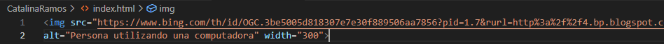
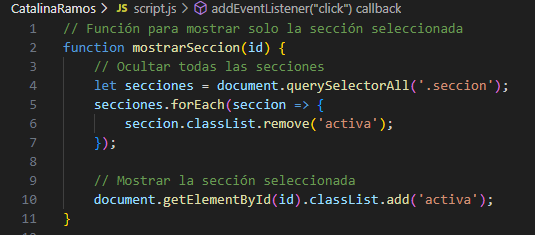
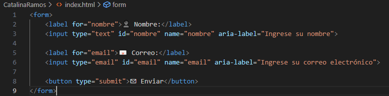

Tutorial de Accesibilidad Web con HTML, CSS y JavaScript
La accesibilidad web garantiza que todas las personas, incluidas aquellas con discapacidades, puedan navegar y usar un sitio sin dificultades.
En este tutorial, aprenderás cómo mejorar la accesibilidad en una página web utilizando HTML, CSS y JavaScript.
📌 ¿Qué aprenderás?
- ✅ Crear un menú de navegación accesible.
- ✅ Ocultar y mostrar contenido dinámicamente.
- ✅ Asegurar que los formularios sean accesibles.
- ✅ Implementar funciones que mejoran la experiencia del usuario.

📝 Usa etiquetas semánticas en HTML
Las etiquetas semánticas ayudan a los lectores de pantalla y a los motores de búsqueda a comprender la estructura del contenido.
- 📌 Header: En HTML, el header es un elemento semántico que representa la cabecera de una página web o de una sección dentro de ella. Generalmente, contiene elementos como el logo, el título, la navegación principal y otros contenidos introductorios.
- 📌 Nav: Es un elemento semántico que representa una sección de navegación, generalmente utilizada para agrupar enlaces que permiten moverse dentro del sitio web
- 📌 Main: Define el contenido principal del documento, excluyendo encabezados, barras laterales y pies de página. Solo debe haber un main por página
- 📌 Footer: Representa el pie de página de un documento o sección, generalmente contiene información como derechos de autor, enlaces de contacto o datos adicionales.
📷 Agrega textos alternativos a las imágenes
Las personas con discapacidad visual utilizan lectores de pantalla para entender las imágenes. Es importante incluir el atributo alt en cada imagen.
🚀 Apply these practices and make your website more inclusive!
💡 ¿Cómo funciona esta sección?
Al hacer clic en "Servicios" en el menú de navegación, se oculta el resto del contenido y solo se muestra esta sección. Esto mejora la experiencia de usuario, evitando información innecesaria y permitiendo una navegación más clara y fluida.
🔹 Código que controla esta funcionalidad:
🚀 Beneficios de mejorar la accesibilidad:
- ✔ Mejora la experiencia del usuario.
- ✔ Permite que más personas accedan a la información.
- ✔ Aumenta el alcance y la usabilidad del sitio.
- ✔ Cumple con normativas de accesibilidad web (WCAG).
🔍 Herramientas para evaluar la accesibilidad:
- 🛠 WAVE: Evaluador de accesibilidad web.
- 🔍 Lighthouse: Extensión de Google Chrome para medir accesibilidad.
- 🎨 Color Contrast Checker: Para validar el contraste de colores.
✨ Your goal is to ensure that every user has a barrier-free digital experience.
📩 Contacto
📌 Características de un formulario accesible:
- ✔ Uso de etiquetas <label> para asociar campos de entrada.
- ✔ Atributo aria-label para describir campos a lectores de pantalla.
- ✔ Botones con descripciones claras.
💻 Ejemplo de formulario accesible
🚀 Consejos para mejorar la accesibilidad en formularios:
- ✔ Evitar el uso de solo colores para indicar errores.
- ✔ Proporcionar mensajes de error claros.
- ✔ Permitir navegación con teclado.